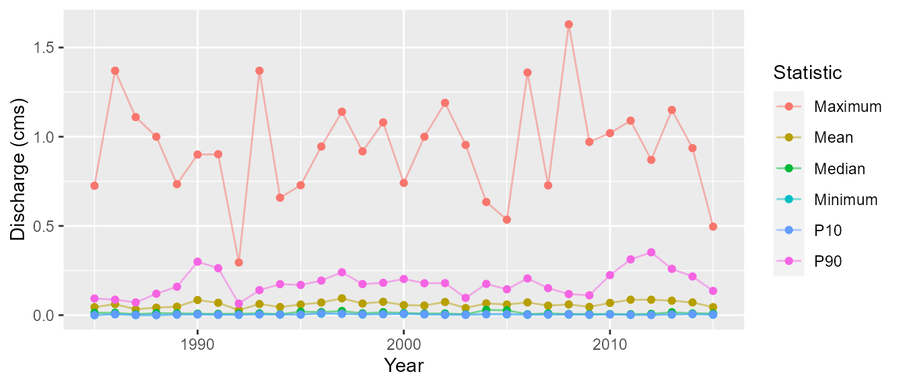

fasstr, the Flow Analysis Summary Statistics Tool for R, is a set of R functions to clean, summarize, analyze, trend, and visualize streamflow data. This package summarizes continuous daily mean streamflow data into various daily, monthly, annual, and long-term statistics, completes trending and frequency analyses, with outputs in both table and plot formats.
This vignette guide contains a look at the steps and internal functions used within the various fasstr functions. It includes descriptions of the function and steps on data importing, cleaning and wrangling, filtering, analyzing, and plotting. It also describes some of the functions in the internal utils.R file and the packages required to use the fasstr package.
Introduction
fasstr utilizes tidy coding to utilize many efficient and useful packages and functions; the tidyverse packages tidy, dplyr, ggplot2 are used frequently, amongst others for specific functions. Because of this, fasstr also exports the pipe %>% to assist in using fasstr in a tidy code routine.
This vignette is broken into the following sections that describe some of the workflows involved in the fasstr functions:
- Data Importing and Checking
- Cleaning Functions (
add_andfill_) - Analysis Functions (
calc_andcompute_) - Plotting Functions (
plot_) - Internal Functions (utils.R file)
- Package Dependencies
1. Data Importing and Checking
The fasstr functions primarily require daily mean streamflow data in cubic metres per second. As such, columns of dates and values are required. Many fasstr functions can analyze multiple stations (using grouping functions) so a column to group data by (typically station numbers) can be provided. Other types of data can be used (climate, water level, etc), but plots and some conversions are based on the units of discharge. As there are two ways to provide daily data to the fasstr functions, the data and the station_number arguments, there are several internal functions stored in the utils.R file that checks the data and formats the columns to ensure the data is prepared for the analysis. The following describes the steps to ensure data is consistently set up for analysis.
The first step is to import daily data. The internal flowdata_import() function provides checks on the data and station_number arguments, and either extracts daily data from HYDAT (returns an error if the number isn’t in HYDAT) using the tidyhydat package, or makes sure that data is in fact a data frame.
At this point in a fasstr function, all the column names of the data are saved as in a vector and any grouping (tidy grouping) is removed. The column names are saved as they may be changed in the following steps and the original names will be returned at the end of the analysis. Any grouping is removed to allow for the appropriate grouping of the analysis. For the cleaning functions (add_ and fill_) any grouping will be returned.
The next step is to ensure the column names of dates, values, and groups are consistent as ‘Date’, ‘Value’, and ‘STATION_NUMBER’ (to match the HYDAT outputs), respectively, for the analysis. This is required as grouping and summarizing functions in the following steps use these specific column names, and provided data may not use the same names. The facilitate the column renaming and checking, there are several internal functions in the utils.R. For each of the three columns there is a function that checks if it exists, the proper formatting, and renames the columns to the appropriate name. These functions are format_dates_col(), format_values_col(), and format_groups_col(). If no grouping is provided, a fake ‘STATION_NUMBER’ of ‘XXXXXXX’ is provided (and removed at the end of the fasstr function). As all three columns are required for many fasstr functions, there is a formal_all_cols() that uses all three functions, with an option to remove all other columns.
At this point in a function there is now a data frame of data, usually called ‘flow_data’ that has three columns of ‘Date’, ‘Value’, and ‘STATION_NUMBER’, that is ready to be cleaned for analysis.
Note: some functions use different data sources than daily data. The compute_HYDAT_peaks_frequencies() does not permit the data argument and just extracts data from HYDAT (and sets it up appropriately) and the compute_frequency_analysis() function requires a unique dataset (see ?compute_frequency_analysis for more information on the function).
The following is an example of these first steps (from calc_annual_stats()):
# Check if data is provided and import it flow_data <- flowdata_import(data = data, station_number = station_number) # Save the original columns (to check for STATION_NUMBER col at end) and ungroup if necessary orig_cols <- names(flow_data) flow_data <- dplyr::ungroup(flow_data) # Check and rename columns flow_data <- format_all_cols(data = flow_data, dates = as.character(substitute(dates)), values = as.character(substitute(values)), groups = as.character(substitute(groups)), rm_other_cols = TRUE)
2. Cleaning Functions (add_ and fill_)
The fasstr cleaning functions (start with add_ or fill_) just add rows or columns of data so there are fewer steps than the other fasstr functions.
After the data has been prepped with the appropriate columns, the columns are added with their equations or other functions, or dates are filled with NA if they are missing. Then if any of the column names were changed in the formatting, they are returned to their original names, and if there was a grouping beforehand, that grouping is returned.
The following is an example of remaining steps of a cleaning function (from add_daily_yield()):
## SET UP BASIN AREA suppressWarnings(flow_data <- add_basin_area(flow_data, basin_area = basin_area)) flow_data$Basin_Area_sqkm_temp <- flow_data$Basin_Area_sqkm ## ADD YIELD COLUMN flow_data <- dplyr::mutate(flow_data, Yield_mm = Value * 86400 / (Basin_Area_sqkm_temp * 1000)) # Return the original names of the Date and Value columns names(flow_data)[names(flow_data) == 'Value'] <- as.character(substitute(values)) names(flow_data)[names(flow_data) == 'STATION_NUMBER'] <- as.character(substitute(groups)) ## Reformat to original names and groups ## ------------------------------------- # Return columns to original order plus new column if('Yield_mm' %in% orig_cols){ flow_data <- flow_data[, c(orig_cols)] } else { flow_data <- flow_data[, c(orig_cols, paste('Yield_mm'))] } dplyr::as_tibble(flow_data)
3. Analysis Functions (calc_ and compute_)
The fasstr analysis functions (start with calc_ or compute_ or screen_) require steps of cleaning (adding appropriate columns), filtering, analyzing and any final data wrangling.
Data Cleaning and Preparing
After the data has been prepped with the appropriate columns, additional columns of dates (years, months, days), rolling days, basin areas, yields or volumes may be added, depending on the analysis. Dates with no data are also filled with NA values so that complete years can be analyzed (and appropriate warnings made if NA’s are produced). To facilitate these steps there is an internal function in the utils.R file called analysis_prep(). This function will fill the missing dates and add columns of ‘CalendarYear’, ‘Month’, ‘MonthName’, ‘WaterYear’, and ‘DayofYear’ to the data frame. It also creates a column of ‘AnalysisDate’ if necessary, that extracts the dates and converts them into a single year for columns or plotting. This is to provide consistency to the analysis functions (as the Wateryear can change based on the water_year_start argument choice). Any other columns (rolling means, yield, etc.) are added as necessary using the necessary cleaning functions.
For some functions a ‘RollingValue’ column is created for the statistics calculations so that a roll_day value of other than 1 can be used. For this, the add_rolling_days() function creates an additional column based on the users selection and is renamed to ‘RollingValue’.
At this point in a function the data frame of data, flow_data, has three columns of ‘Date’, ‘Value’ or ‘RollingValue’, and ‘STATION_NUMBER’, and any other date and necessary column required to be filtered for analysis.
The following is an example of the cleaning steps (from calc_annual_stats()):
# Fill missing dates, add date variables flow_data <- analysis_prep(data = flow_data, water_year_start = water_year_start) # Add rolling means to end of dataframe flow_data <- add_rolling_means(data = flow_data, roll_days = roll_days, roll_align = roll_align) colnames(flow_data)[ncol(flow_data)] <- 'RollingValue'
Data Filtering
With all the necessary columns of data for analysis, the data can be filtered for the years, months, dates, etc. as specified in the fasstr function arguments. These are mostly completed with simple tidy filtering functions. However when using the complete_years argument in some of the fasstr functions, there is an internal function in the utils.R file called filter_complete_yrs() that removes data from years with incomplete data.
At this point in a function the data frame of data, flow_data, has three columns of ‘Date’, ‘Value’, and ‘STATION_NUMBER’, and any other date and necessary column, and is filtered for the analysis.
The following is an example of the filtering steps (from calc_annual_stats()):
Calculating Statistics
Now that the data contains all the necessary data to summarize, using the tidy methods of the tidyverse (predominately tidyr and dplyr packages), data is grouped by the necessary variables. Data is usually grouped by ‘STATION_NUMBER’ and then whatever time-frame variable the function calls for (years, months, days, etc).
Then the data is typically analyzed using the dplyr::summarize() function (for means, median, minimums, etc). If an analysis considers if missing data is available or not, then the na.rm argument is set to the ignore_missing function provided in the fasstr functions. If NAN or Inf values are produced in the results, then they are replaced with NA for consistency. If percentiles are being calculated, another code chunk will loop through each percentile selected and attach to the data.
Data is then ungrouped to allow for further data wrangling and outputting.
The following is an example of the calculation steps (from calc_annual_stats()):
# Calculate basic stats annual_stats <- dplyr::summarize(dplyr::group_by(flow_data, STATION_NUMBER, WaterYear), Mean = mean(RollingValue, na.rm = ignore_missing), Median = stats::median(RollingValue, na.rm = ignore_missing), Maximum = max (RollingValue, na.rm = ignore_missing), Minimum = min (RollingValue, na.rm = ignore_missing)) annual_stats <- dplyr::ungroup(annual_stats) #Remove Nans and Infs annual_stats$Mean[is.nan(annual_stats$Mean)] <- NA annual_stats$Maximum[is.infinite(annual_stats$Maximum)] <- NA annual_stats$Minimum[is.infinite(annual_stats$Minimum)] <- NA # Calculate annual percentiles if(!all(is.na(percentiles))) { for (ptile in percentiles) { # Calculate percentiles annual_stats_ptile <- dplyr::summarise(dplyr::group_by(flow_data, STATION_NUMBER, WaterYear), Percentile = stats::quantile(RollingValue, ptile / 100, na.rm = TRUE)) annual_stats_ptile <- dplyr::ungroup(annual_stats_ptile) names(annual_stats_ptile)[names(annual_stats_ptile) == 'Percentile'] <- paste0('P', ptile) # Merge with stats annual_stats <- merge(annual_stats, annual_stats_ptile, by = c('STATION_NUMBER', 'WaterYear')) # Remove percentile if mean is NA (workaround for na.rm=FALSE in quantile) annual_stats[, ncol(annual_stats)] <- ifelse(is.na(annual_stats$Mean), NA, annual_stats[, ncol(annual_stats)]) } }
Final Data Wrangling
To finalize the data results there are usually some final data filtering or wrangling steps. Some of these include some additional filtering (usually when using the exclude_years argument; replaces data with NA), providing warnings if NA’s are produced in the data, renaming the analysis date columns, and returning the names of the groups (i.e. ‘STATION_NUMBER’ column) if different, or removing it if it wasn’t provided (as listed in the original column names vector described above).
If the option to transpose the results data was set to TRUE with the transpose argument, then the data is gathered and spread such that each statistics is a single row as opposed to a column in the original results.
After all wrangling, the final results are returned from the function as a tibble.
The following is an example of the final wrangling steps (from calc_annual_stats()):
# Rename year column annual_stats <- dplyr::rename(annual_stats, Year = WaterYear) # Remove selected excluded years annual_stats[annual_stats$Year %in% exclude_years, -(1:2)] <- NA # If transpose if selected if (transpose) { # Get list of columns to order the Statistic column after transposing stat_levels <- names(annual_stats[-(1:2)]) # Transpose the columns for rows annual_stats <- tidyr::gather(annual_stats, Statistic, Value, -STATION_NUMBER, -Year) annual_stats <- tidyr::spread(annual_stats, Year, Value) # Order the columns annual_stats$Statistic <- factor(annual_stats$Statistic, levels = stat_levels) annual_stats <- dplyr::arrange(annual_stats, STATION_NUMBER, Statistic) } # Give warning if any NA values missing_values_warning(annual_stats[, 3:ncol(annual_stats)]) # Recheck if station_number/grouping was in original data and rename or remove as necessary if(as.character(substitute(groups)) %in% orig_cols) { names(annual_stats)[names(annual_stats) == 'STATION_NUMBER'] <- as.character(substitute(groups)) } else { annual_stats <- dplyr::select(annual_stats, -STATION_NUMBER) } dplyr::as_tibble(annual_stats)
4. Plotting Functions (plot_)
The fasstr plotting functions (start with plot_) take the data calculated in the analysis functions and then plot the data with set or custom plotting templates.
Calculating Statistics
For the plotting functions data is typically calculated from the other calc_ fasstr functions and then wrangled into proper formatting. Before calculating the data, various checks are performed on the arguments and then the flowdata_import() is first used to check the data or station_data selections. Then the values, dates, and groups columns are formatted properly and all other columns removed using the format_all_cols() internal function. This data frame and the function arguments are then passed onto the fasstr calc_ function. Any final data wrangling is also then completed to set it up for the plotting functions. Some NA values may be replaced with substitute values to allow the plot to be produced along with the appropriate data warnings.
Plotting Statistics
Before plotting, some variables are created based on the custom options provided in the arguments (axis labels etc).
As there is the potential for many plots to be produced in the fasstr functions, a tidy method was used to create multiple plots simultaneously in an efficient process using dplyr, tidyr, purrr, and ggplot2 packages to create a tibble of plots. See this webpage for more information on the method. For fasstr plotting functions, this entails creating a single tibble of groups (‘STATION_NUMBER’s), data, and plots. First the data is grouped by the grouping (typically ’STATION_NUMBER’s) using the dplyr::group() function; this will create a single plot for each grouping. Then using tidyr::nest() a tibble is created with two columns, the first being the ’STATION_NUMBER’ and the second being a tibble of data for each ‘STATION_NUMBER’ (a tibble of tibbles). Then using dplyr::mutate() function a column of ggplots is created; and using purrr::map2() all of the plots can be created simultaneously (thus saving time in the function). As this type of table isn’t entirely user-friendly, each plot is extracted into a list and named appropriately (typically by each grouping and then the statistic).
The following is an example of the process of the creating the plots (with simplified plotting).
# Calculate the statistics annual_stats <- calc_annual_stats(station_number = c('08NM116', '08NM240'), start_year = 1985, end_year = 2015) # Wrangle statistics for plotting annual_stats <- tidyr::gather(annual_stats, Statistic, Value, -Year, -STATION_NUMBER) # Group data by grouping tidy_plots <- dplyr::group_by(annual_stats, STATION_NUMBER) # Create a tibble with a column of STATION_NUMBERs and a column of data for each STATION_NUMBER tidy_plots <- tidyr::nest(tidy_plots) # Create a new column of plots using mutate and purrr::map2 tidy_plots <- dplyr::mutate(tidy_plots, plot = purrr::map2(data, STATION_NUMBER, ~ggplot2::ggplot(data = ., ggplot2::aes(x = Year, y = Value, color = Statistic)) + ggplot2::theme(plot.title = ggplot2::element_text(hjust = 0.5)) + ggplot2::geom_line(alpha = 0.5, na.rm = TRUE) + ggplot2::geom_point(na.rm = TRUE) + ggplot2::ylab('Discharge (cms)') )) # Create a list of named plots extracted from the tibble plots <- tidy_plots$plot if (nrow(tidy_plots) == 1) { names(plots) <- 'Annual_Statistics' } else { names(plots) <- paste0(tidy_plots$STATION_NUMBER, '_Annual_Statistics') } # Return the plots plots
$`08NM116_Annual_Statistics`
$`08NM240_Annual_Statistics`
5. Internal Functions (utils.R file)
Within the package there is an R file called utils.R that contains a list of functions that are used repeatedly throughout the various fasstr functions to minimize repetition. These functions are used internally and are not exported from the package.
At the top of the file are several data formatting and wrangling functions:
-
flowdata_import()- checks if eitherstation_numberordataarguments are provided; extracts HYDAT data or sets up data for next steps. -
format_dates_col()- checks for proper dates formats in column; renames columns to ‘Date’ if not. -
format_values_col()- checks for proper numeric formats in column; renames columns to ‘Value’ if not. -
format_groups_col()- checks for proper formats in column; renames columns to ‘STATION_NUMBER’ if not; if no groups provided, a temporary ‘STATION_NUMBER’ of ‘XXXXXXX’ is created for analysis. -
format_all_cols()- checks for proper formats of all dates, values, and groups columns; uses all three functions listed above; option to remove all other columns ifrm_other_cols = TRUE. -
analysis_prep()- fills missing dates with NA; adds dates columns of Years, day of years, and dates; formatted to calendar or water year as specified. -
filter_complete_yrs()- filters data for years with which there is only complete annual data; required for some analyses.
Below these formatting and data wrangling functions are many functions used to check arguments and provide warnings when certain data is present. See the file for examples of these internal functions.
6. Package Dependencies
The following list contains the packages required to complete many of the fasstr functions:
-
dplyr- used for many tidy functions (grouping, summarizing, etc) -
e1071- used in the frequency analyses for determining skewness for the fitting distributions -
fitdistrplus- used in the frequency analyses for fitting data to the distributions -
ggplot2- used for plotting the data -
lubridate- used for easy creation of date columns -
PearsonDS- used in the frequency analyses for fitting data to the distributions -
plyr- used in the frequency analyses to handle data -
purrr- used in the plotting functions to plot many plots simultaneously -
RcppRoll- used to add rolling means -
scales- used in the plotting functions to customize plots -
tidyhydat- used to extract data from a HYDAT database -
tidyr- used for many tidy functions (gather, spread, etc) -
openxlsx- used to write data as Excel files in the write_ functions -
zyp- used in the trending funrction to calculate the trends